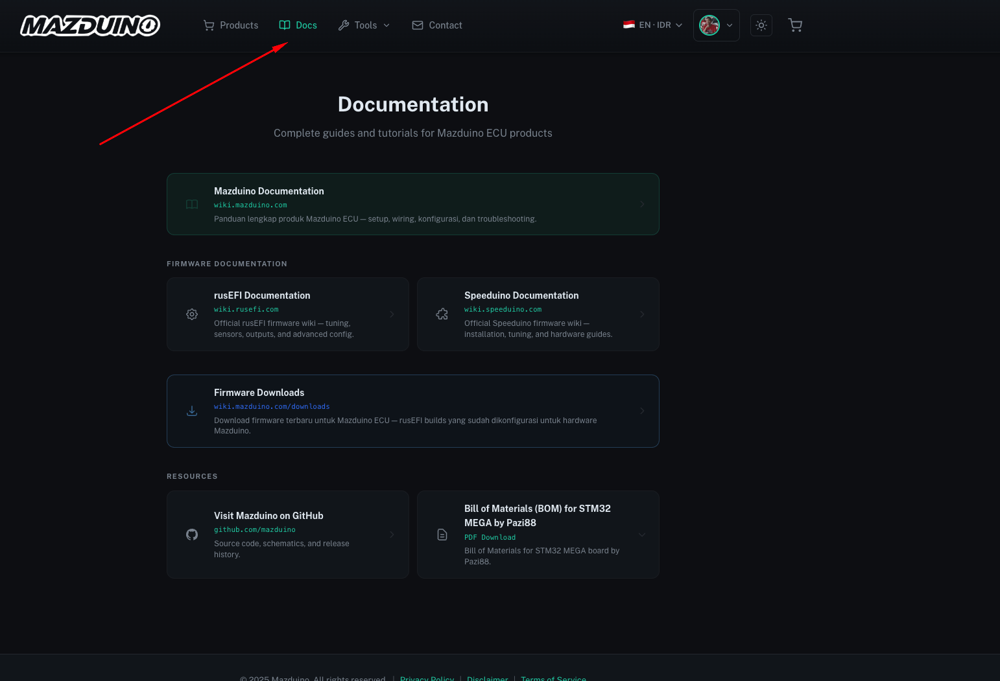
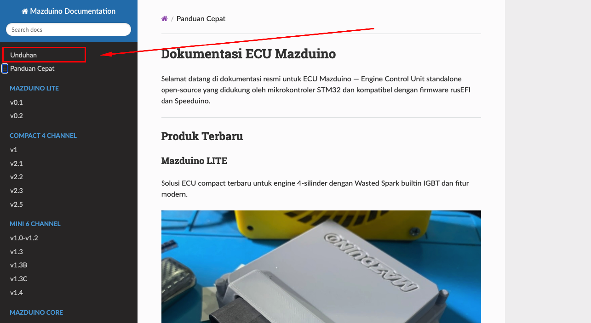
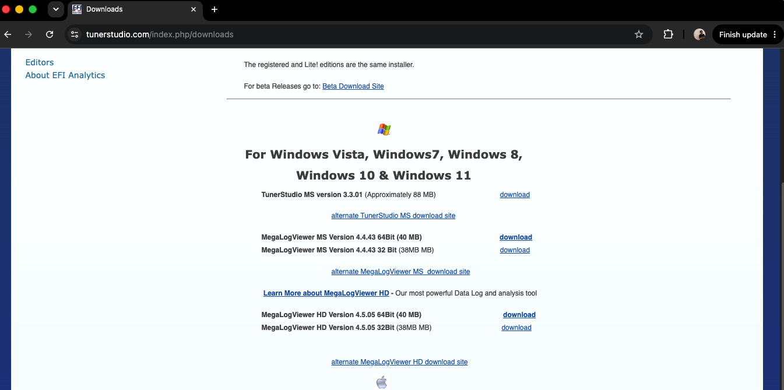

Terakhir diperbarui: 9 Juli 2026
Instalasi TunerStudio untuk ECU Mazduino¶
Panduan lengkap untuk mengunduh, menginstal, dan mengkonfigurasi TunerStudio untuk digunakan dengan ECU Mazduino.
Persyaratan Sistem¶
Sebelum menginstal TunerStudio, pastikan sistem Anda memenuhi persyaratan berikut:
-
Sistem Operasi: Windows 10 atau yang lebih baru, macOS, atau Linux
-
Hardware: Minimum RAM 4GB, processor 2GHz, dan storage tersedia 500MB
-
Koneksi: Port USB untuk komunikasi langsung dengan Mazduino
-
Driver: Windows 10 ke atas umumnya sudah memiliki driver yang diperlukan
Langkah 1: Mengakses Website Mazduino¶
-
Buka Website Mazduino: Buka browser web dan kunjungi wiki.mazduino.com
-
Navigasi ke Menu: Klik ikon menu hamburger (tiga garis horizontal) yang terletak di bagian kanan atas halaman
- Masuk ke Bagian Downloads: Dari menu, pilih Downloads untuk mengakses software dan sumber daya yang tersedia untuk Mazduino

Referensi Gambar: Gambar di atas menunjukkan homepage website Mazduino. Ikuti langkah-langkah yang dijelaskan untuk menemukan bagian Downloads.
Langkah 2: Memilih Opsi Downloads¶
- Buka Menu: Setelah mengklik ikon menu hamburger, akan muncul daftar opsi
- Pilih Downloads: Dari menu, klik Downloads untuk melanjutkan ke halaman di mana Anda dapat mengunduh TunerStudio dan sumber daya lainnya untuk Mazduino

Referensi Gambar: Pada screenshot di atas, Anda dapat melihat opsi Downloads yang di-highlight dalam menu.
Langkah 3: Download TunerStudio¶
- Cari Link TunerStudio: Di halaman Downloads, gulir ke bagian yang berlabel Software Requirements
- Klik pada TunerStudio Tuning Software: Temukan link TunerStudio MS dan klik untuk mengunduh versi terbaru software
Referensi Gambar: Pada screenshot di atas, link download TunerStudio di-highlight di bawah bagian "Software Requirements". Klik link ini untuk memulai download.
Langkah 4: Download Versi Terbaru TunerStudio¶
- Redirect ke Halaman Download TunerStudio: Setelah memilih TunerStudio dari website Mazduino, Anda akan diarahkan ke halaman download resmi TunerStudio di situs EFI Analytics
- Cari Versi Terbaru: Cari link TunerStudio MS version X.X.XX (Approximately XX MB). Link ini menyediakan versi terbaru, dengan nomor versi yang tepat dan ukuran file yang ditampilkan
- Klik untuk Download: Klik link download di sebelah versi TunerStudio MS terbaru untuk memulai download

Referensi Gambar: Pada screenshot di atas, versi TunerStudio saat ini terdaftar di bagian atas, dengan link "download" di sebelah kanan. Klik link ini untuk mendapatkan versi terbaru untuk Mazduino Anda.
Langkah 5: Pilih "Open" untuk Memulai Instalasi¶
- Opsi Download: Setelah Anda mengklik link download untuk TunerStudio, mungkin akan muncul pop-up yang menanyakan apakah Anda ingin Open atau Save file
- Open: Opsi ini akan langsung membuka installer setelah selesai diunduh, memungkinkan Anda untuk memulai proses instalasi segera
-
Save: Opsi ini akan menyimpan file installer ke komputer Anda, memungkinkan Anda menginstalnya nanti dengan mencari file di folder Downloads
-
Pilihan yang Direkomendasikan: Klik Open untuk melanjutkan langsung ke proses instalasi setelah download selesai. Opsi ini ideal jika Anda siap untuk menginstal TunerStudio segera
Referensi Gambar: Pada screenshot di atas, opsi Open di-highlight. Pilih ini untuk memulai instalasi langsung setelah download.
Langkah 6: Menerima User Account Control (UAC) Prompt¶
- Notifikasi User Account Control: Setelah download selesai, Windows mungkin menampilkan prompt User Account Control (UAC) yang meminta izin untuk melanjutkan instalasi
- Berikan Izin: Ketika prompt ini muncul, klik Yes untuk mengizinkan instalasi. Izin ini diperlukan agar TunerStudio dapat melakukan perubahan yang diperlukan pada komputer Anda
Catatan: Prompt UAC adalah langkah keamanan standar Windows. Menerimanya memastikan bahwa TunerStudio terinstal dengan benar dan dapat berfungsi dengan izin penuh.
Langkah 7: Menerima License Agreement¶
- Layar License Agreement: Setup TunerStudio akan menampilkan jendela License Agreement. Baca dengan cermat ketentuan perjanjian
- Pilih "I accept the agreement": Untuk melanjutkan instalasi, klik opsi I accept the agreement
- Klik Next: Setelah Anda menerima perjanjian, klik Next untuk melanjutkan setup
Referensi Gambar: Pada screenshot di atas, pilih opsi I accept the agreement untuk mengaktifkan tombol Next.
Langkah 8: Pilih Installation Path¶
- Pilih Destination Location: Setup akan meminta Anda untuk memilih folder tempat TunerStudio akan diinstal. Secara default, diatur ke
C:\Program Files (x86)\EFIAnalytics\TunerStudioMS - Pertahankan atau Ubah Path:
- Jika Anda puas dengan lokasi default, cukup klik Next untuk melanjutkan
- Untuk memilih lokasi yang berbeda, klik Browse, pilih folder yang diinginkan, kemudian klik Next
Catatan: Disarankan untuk menggunakan path default kecuali Anda memiliki alasan khusus untuk mengubahnya.
Referensi Gambar: Screenshot di atas menunjukkan path instalasi default. Klik Next untuk melanjutkan.
Langkah 9: Pilih Start Menu Folder¶
- Pemilihan Start Menu Folder: Setup akan meminta Anda untuk memilih folder Start Menu tempat shortcut TunerStudio akan ditempatkan. Secara default, diatur ke EFI Analytics
- Pertahankan atau Ubah Folder:
- Untuk melanjutkan dengan folder default, cukup klik Next
- Jika Anda lebih suka membuat shortcut di folder yang berbeda, klik Browse, pilih lokasi yang diinginkan, kemudian klik Next
Referensi Gambar: Screenshot di atas menunjukkan folder Start Menu default. Klik Next untuk melanjutkan.
Langkah 10: Pilih Additional Tasks¶
- Shortcut Tambahan: Setup akan menanyakan apakah Anda ingin membuat shortcut desktop untuk TunerStudio
- Buat Desktop Shortcut (Opsional):
- Untuk menambahkan shortcut ke desktop untuk akses mudah, centang kotak di sebelah Create a desktop shortcut
- Jika Anda tidak memerlukan shortcut desktop, biarkan kotak tidak dicentang
- Klik Next: Setelah Anda membuat pilihan, klik Next untuk melanjutkan instalasi
Referensi Gambar: Pada screenshot di atas, Anda dapat melihat opsi untuk membuat desktop shortcut. Pilih opsi ini jika Anda ingin akses cepat ke TunerStudio dari desktop.
Langkah 11: Memulai Instalasi¶
- Review Settings: Setup akan menampilkan ringkasan pengaturan instalasi yang Anda pilih, termasuk lokasi tujuan dan folder Start Menu
- Klik Install: Jika semua pengaturan benar, klik Install untuk memulai proses instalasi. Jika Anda perlu mengubah pengaturan, klik Back untuk kembali ke langkah sebelumnya
Referensi Gambar: Pada screenshot di atas, tombol Install di-highlight. Klik tombol ini untuk melanjutkan instalasi TunerStudio.
Langkah 12: Menyelesaikan Instalasi dan Meluncurkan TunerStudio¶
- Selesaikan Instalasi: Setelah setup selesai, Anda akan melihat layar konfirmasi bahwa instalasi telah selesai
- Launch TunerStudio:
- Secara default, opsi Launch TunerStudio MS dipilih. Biarkan kotak ini dicentang untuk secara otomatis membuka TunerStudio setelah Anda mengklik Finish
- Jika Anda tidak ingin meluncurkan TunerStudio segera, hapus centang pada kotak
- Klik Finish: Klik Finish untuk keluar dari setup dan menyelesaikan proses instalasi
Referensi Gambar: Pada screenshot di atas, opsi untuk meluncurkan TunerStudio dicentang. Klik Finish untuk menutup setup dan mulai menggunakan TunerStudio.
Mengatasi Masalah Instalasi¶
Masalah Driver COM Port¶
Gejala: TunerStudio tidak dapat mendeteksi ECU Mazduino atau COM port tidak muncul
Solusi:
- Windows 10 ke atas: Umumnya sudah memiliki driver yang diperlukan secara pre-installed
- Windows versi lama: Mungkin perlu menginstal STMicroelectronics Virtual COM Port (VCP) drivers
- Download driver: Dari website STMicroelectronics resmi
- Restart komputer: Setelah instalasi driver
Masalah UAC Permission¶
Gejala: Instalasi gagal karena masalah permission
Solusi:
- Klik kanan pada installer TunerStudio
- Pilih "Run as administrator"
- Ikuti langkah instalasi seperti biasa
Masalah Antivirus¶
Gejala: Antivirus memblokir instalasi TunerStudio
Solusi:
- Sementara disable antivirus selama instalasi
- Tambahkan TunerStudio ke whitelist antivirus
- Enable antivirus kembali setelah instalasi selesai